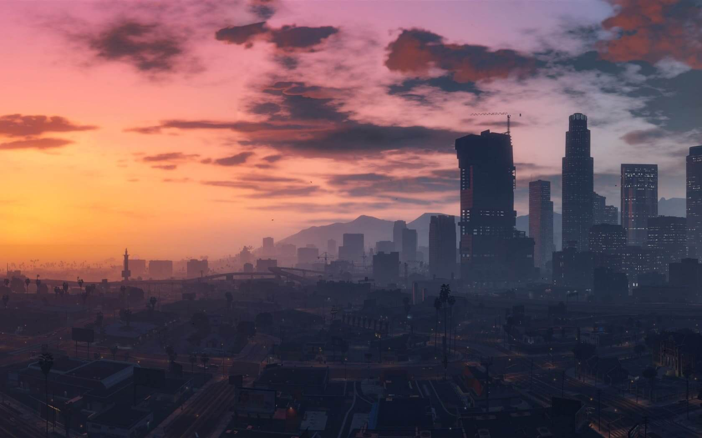
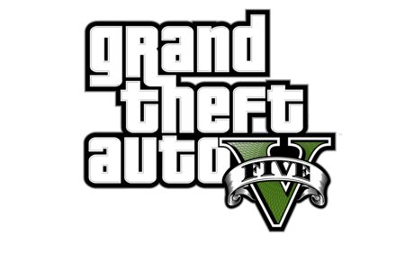

<div class="wrapper-jeux-video">
  <div class="container-jeux-video">
    <div class="card">
      <div class="container-img">
        
        
      </div>
      <div class="container-paragraphe">
        <h3>Liberté</h3>
        <p class="para-jeu">
          Dans GTA 5, le sentiment de liberté est palpitant et libérateur. En
          parcourant les rues animées de Los Santos, je suis libre de choisir ma
          propre aventure. Je peux me promener à pied, conduire une super
          voiture ou prendre un jet pour survoler la ville. Les possibilités
          sont infinies : des braquages audacieux aux courses endiablées, en
          passant par des activités plus calmes comme le golf ou le tennis. La
          ville regorge de secrets à découvrir, d'endroits à explorer et de
          personnages hauts en couleur à rencontrer. Faisant de GTA 5 un monde
          ouvert où la liberté est maître. A noter qu'il est le produit
          culturelle le plus rentable de l'histoire dépassant films, séries,
          musiques etc...
        </p>
      </div>
    </div>
    <div class="card">
      <div class="container-img">
        
        
      </div>
      <div class="container-paragraphe">
        <h3>Exploration</h3>
        <p class="para-jeu">
          Dans ce jeu d'aventure et de mystère, les joueurs incarnent un
          astronaute explorant un système solaire en constante évolution. Chaque
          boucle temporelle, d'une durée de 22 minutes, offre une opportunité de
          découvrir les secrets d'une civilisation éteinte et de percer les
          mystères du cosmos. Le sentiment d'exploration est profondément
          ressenti, alors que l'on découvre des paysages époustouflants, des
          ruines antiques et des indices disséminés à travers l'univers. Chaque
          découverte est une récompense en soi, alimentant la soif de
          connaissance et de compréhension de l'inconnu. Outer Wilds offre une
          expérience de jeu unique, où l'exploration est le moteur de
          l'aventure.
        </p>
      </div>
    </div>
    <div class="card">
      <div class="container-img">
        
        
      </div>
      <div class="container-paragraphe">
        <h3>Compétition</h3>
        <p class="para-jeu">
          L'aspect compétitif de CS:GO plonge les joueurs dans une atmosphère
          palpitante et haletante. Chaque partie est une bataille stratégique où
          la coopération et l'individualité se rencontrent. Les joueurs
          s'affrontent dans des matchs intenses où chaque prise de décision
          compte. L'adrénaline monte lorsque les tactiques se déploient, les
          tirs précis sont échangés et les retournements de situation
          surviennent. La compétition dans CS:GO pousse les joueurs à se
          dépasser, à améliorer leurs compétences et à affiner leur maîtrise du
          jeu.
        </p>
      </div>
    </div>
    <div class="card">
      <div class="container-img">
        
        
      </div>
      <div class="container-paragraphe">
        <h3>Gestion</h3>
        <p class="para-jeu">
          Dans Cities: Skylines, l'aspect gestion est au cœur de l'expérience de
          jeu. Les joueurs sont responsables de la construction et de la gestion
          d'une ville prospère. Chaque décision a un impact direct sur le
          développement de la ville. Les joueurs doivent gérer les finances de
          manière stratégique, surveiller la satisfaction des habitants et faire
          face à divers défis tels que le trafic, la pollution et les
          catastrophes naturelles. Ce jeu offre une expérience immersive où
          chaque choix compte, et où la satisfaction de voir une ville prospérer
          grâce à une gestion efficace est gratifiante.
        </p>
      </div>
    </div>
  </div>
</div>
